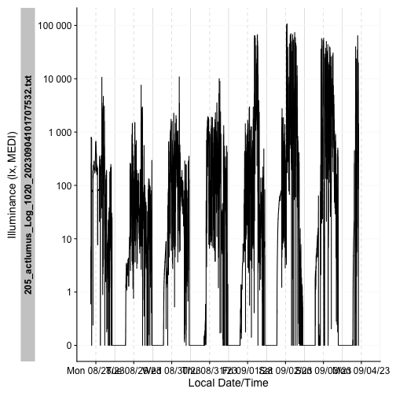

Imports a dataset and does the necessary transformations to get the right
column formats. Unless specified otherwise, the function will set the
timezone of the data to UTC. It will also enforce an Id to separate
different datasets and will order/arrange the dataset within each Id by
Datetime. See the Details and Devices section for more information and the
full list of arguments.
Arguments
- device
From what device do you want to import? For a few devices, there is a sample data file that you can use to test the function (see the examples). See supported.devices for a list of supported devices and see below for more information on devices with specific requirements.
- ...
Parameters that get handed down to the specific import functions
Details
There are specific and a general import function. The general import function
is described below, whereas the specific import functions take the form of
import$device(). The general import function is a thin wrapper around the
specific import functions. The specific import functions take the following
arguments:
filename: Filename(s) for the Dataset. Can also contain the filepath, butpathmust then beNULL. Expects acharacter. If the vector is longer than1, multiple files will be read in into one Tibble.path: Optional path for the dataset(s).NULLis the default. Expects acharacter.n_max: maximum number of lines to read. Default isInf.tz: Timezone of the data."UTC"is the default. Expects acharacter. You can look up the supported timezones withOlsonNames().Id.colname: Lets you specify a column for the id of a dataset. Expects a symbol (Default isId). This column will be used for grouping (dplyr::group_by()).auto.id: If theId.colnamecolumn is not part of thedataset, theIdcan be automatically extracted from the filename. The argument expects a regular expression regex and will by default just give the whole filename without file extension.manual.id: If this argument is notNULL, and noIdcolumn is part of thedataset, thischaracterscalar will be used. We discourage the use of this arguments when importing more than one filelocale: The locale controls defaults that vary from place to place.dst_adjustment: If a file crosses daylight savings time, but the device does not adjust time stamps accordingly, you can set this argument toTRUE, to apply this shift manually. It is selective, so it will only be done in files that cross between DST and standard time. Default isFALSE. Usesdst_change_handler()to do the adjustment. Look there for more infos. It is not equipped to handle two jumps in one file (so back and forth between DST and standard time), but will work fine if jums occur in separate files.auto.plot: a logical on whether to callgg_overview()after import. Default isTRUE....: supply additional arguments to the readr import functions, likena. Might also be used to supply arguments to the specific import functions, likecolumn_namesforActiwatch_Spectrumdevices. Those devices will always throw a helpful error message if you forget to supply the necessary arguments. If theIdcolumn is already part of thedatasetit will just use this column. If the column is not present it will add this column and fill it with the filename of the importfile (see paramauto.id).
Devices
The set of import functions provide a convenient way to import light logger
data that is then perfectly formatted to add metadata, make visualizations
and analyses. There are a number of devices supported, where import should
just work out of the box. To get an overview, you can simply call the
supported.devices dataset. The list will grow continuously as the package
is maintained.
supported.devices
#> [1] "Actiwatch_Spectrum" "ActLumus" "ActTrust"
#> [4] "DeLux" "LiDo" "LightWatcher"
#> [7] "LYS" "nanoLambda" "Speccy"
#> [10] "SpectraWear"ActLumus
A sample file is provided with the package, it can be accessed through
system.file("extdata/205_actlumus_Log_1020_20230904101707532.txt.zip", package = "LightLogR"). It does not need to be unzipped to be imported.
This sample file is a good example for a regular dataset without gaps
LYS
A sample file is provided with the package, it can be accessed
through system.file("extdata/sample_data_LYS.csv", package = "LightLogR"). This sample file is a good example for an irregular dataset.
Examples
Imports made easy
To import a file, simple specify the filename (and path) and feed it to the
import_Dataset function. There are sample datasets for all devices.
The import functions provide a basic overview of the data after import, such as the intervals between measurements or the start and end dates.
filepath <- system.file("extdata/sample_data_LYS.csv", package = "LightLogR")
dataset <- import_Dataset("LYS", filepath, auto.plot = FALSE)
#>
#> Successfully read in 11'422 observations across 1 Ids from 1 LYS-file(s).
#> Timezone set is UTC.
#> The system timezone is Europe/Berlin. Please correct if necessary!
#>
#> First Observation: 2023-06-21 00:00:12
#> Last Observation: 2023-06-22 23:59:48
#> Timespan: 2 days
#>
#> Observation intervals:
#> Id interval.time n pct
#> 1 sample_data_LYS 15s 10015 87.689%
#> 2 sample_data_LYS 16s 1367 11.969%
#> 3 sample_data_LYS 17s 23 0.201%
#> 4 sample_data_LYS 18s 16 0.140%Import functions can also be called directly:
filepath <- system.file("extdata/205_actlumus_Log_1020_20230904101707532.txt.zip", package = "LightLogR")
dataset <- import$ActLumus(filepath, auto.plot = FALSE)
#>
#> Successfully read in 61'016 observations across 1 Ids from 1 ActLumus-file(s).
#> Timezone set is UTC.
#> The system timezone is Europe/Berlin. Please correct if necessary!
#>
#> First Observation: 2023-08-28 08:47:54
#> Last Observation: 2023-09-04 10:17:04
#> Timespan: 7.1 days
#>
#> Observation intervals:
#> Id interval.time n pct
#> 1 205_actlumus_Log_1020_20230904101707532.txt 10s 61015 100%
dataset %>% gg_days()
dataset %>%
dplyr::select(Datetime, TEMPERATURE, LIGHT, MEDI, Id) %>%
dplyr::slice(1500:1505)
#> # A tibble: 6 x 5
#> # Groups: Id [1]
#> Datetime TEMPERATURE LIGHT MEDI Id
#> <dttm> <dbl> <dbl> <dbl> <fct>
#> 1 2023-08-28 12:57:44 26.9 212. 202. 205_actlumus_Log_1020_20230904101~
#> 2 2023-08-28 12:57:54 26.9 208. 199. 205_actlumus_Log_1020_20230904101~
#> 3 2023-08-28 12:58:04 26.9 205. 196. 205_actlumus_Log_1020_20230904101~
#> 4 2023-08-28 12:58:14 26.8 204. 194. 205_actlumus_Log_1020_20230904101~
#> 5 2023-08-28 12:58:24 26.9 203. 194. 205_actlumus_Log_1020_20230904101~
#> 6 2023-08-28 12:58:34 26.8 204. 195. 205_actlumus_Log_1020_20230904101~